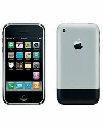
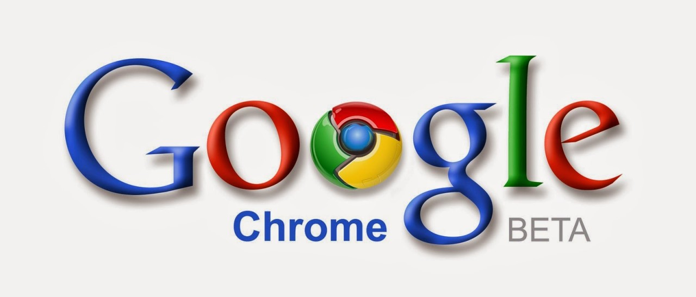

2000-2010 Web social e interactiva (Web 2.0)
2003-Se lanza WordPress
El 27 de mayo de 2003 por Matt Mullenweg y Mike Little como un sistema de gestión de contenidos (CMS) de código abierto.
2004-Fundación de Facebook y Flickr
Sale a la luz para el desarrollo de la web social, el lanzamiento de dos plataformas clave: Facebook y Flickr, ambas fundadas en febrero de ese año.

2005-Lanzamiento de YouTube
YouTube fue lanzado oficialmente en mayo de ese año como una plataforma de videos.
2006-Lanzamiento de Twitter (X actualmente)
Twitter fue lanzado oficialmente originándose en la compañía Odeo. Inicialmente conocido como "twttr", el servicio se centraba en microblogging vía SMS con un límite de 140 caracteres.

2007-Sale el primer iPhone
El primer iPhone fue presentado por Steve Jobs el 9 de enero de 2007. Revolucionó la tecnología al combinar un iPod, teléfono y navegador de internet en una pantalla táctil, con modelos de 4 GB y 8 GB.
2008-Lanzamiento de Google Chrome
Google Chrome fue lanzado por Google el 2 de septiembre de 2008. Diseñado para ser rápido y seguro, introdujo una arquitectura multiproceso donde cada pestaña funcionaba de forma independiente.
